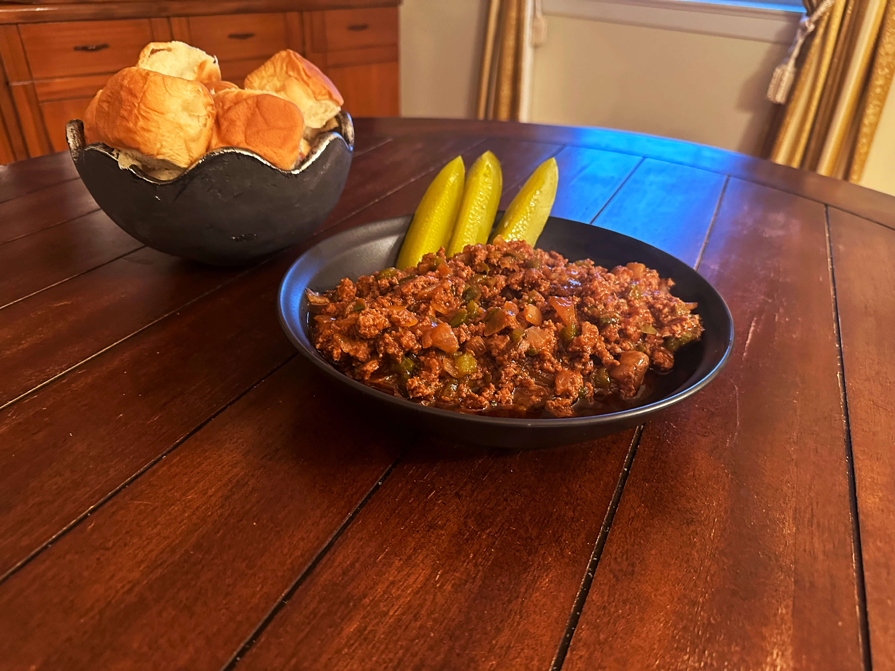

Sloppy Joe

Description
This delicious sloppy joe recipe is such a simple recipe and so
inexpensive to make, a budget-friendly family dinner. The tender and juicy
ground beef are sauteed with green peppers and onion then cooked in a
hearty tomato sauce.
Ingredients
- 1 medium onion, diced
- 1 bell pepper, diced
- 1 lb. ground beef or turkey
- Salt and pepper to taste
- ½ cup cold water
- ¾ cup ketchup
- ½ teaspoon Worcestershire sauce
- 1½ tablespoons brown sugar
- ½ teaspoon cayenne pepper
- ½ teaspoon cocoa powder
- 1 cup shredded cheddar cheese
- 1 package King’s Hawaiian™ Sweet Rolls
Steps
Sauté onion and bell pepper over medium-high heat in butter or oil. Add
meat and brown, seasoning with salt and pepper to taste. Drain excess fat.
Add water, ketchup, Worcestershire sauce, and spices. Simmer for 10
minutes stirring regularly. Mix in shredded cheese. Serve over King’s
Hawaiian sweet rolls.